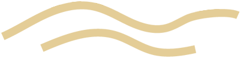

ZANDVOORT · AAN ZEE
Een ander perspectief op de zee.
Ontdek de kust van Zandvoort en neem rechtstreeks contact op voor informatie over een verblijf.
Scroll om de kust, architectuur en zeezijde vanuit een ander standpunt te bekijken.

PALACE HOTELZANDVOORT Neem contact op ↗ZANDVOORT · AAN ZEE
Ontdek de kust van Zandvoort en neem rechtstreeks contact op voor informatie over een verblijf.
Scroll om de kust, architectuur en zeezijde vanuit een ander standpunt te bekijken.
02 · ARCHITECTUUR
Draai rond de aangeleverde torenvisualisatie. De gevel, raamvlakken en balkonzones zijn onderdeel van het 3D-model.
Architectuurvisualisatie op basis van het aangeleverde OBJ-model.
03 · ZEEZIJDE
De camera draait richting de kust en beweegt langs de duinen en het water. Kies een hotspot of camerastand om zelf verder te kijken.
De scène is een visualisatie; ze geeft geen woningoriëntatie of uitzichtgarantie weer.
04 · VERDER ONTDEKKEN
Gebruik de camerastanden, tik op een gemarkeerd punt of schakel vrij verkennen in. Je kunt altijd verder scrollen naar de woninginformatie en het contact.
Vraag informatie aan →HET APPARTEMENT
Wil je meer weten over het verblijf? Neem rechtstreeks contact op voor de actuele woninginformatie en de mogelijkheden.
Vraag informatie aan →Woningbeelden op aanvraag
Er zijn nog geen goedgekeurde foto's van het appartement aangeleverd.Neem contact op voor bevestigde informatie. Deze pagina toont geen onbevestigde voorzieningen, prijzen of beschikbaarheid.
OMGEVING · ZANDVOORT
Een panoramisch omgevingsbeeld van Zandvoort. Dit is geen foto van het appartement.
ZANDVOORT · NOORD-HOLLAND
Zandvoort ligt aan de Nederlandse Noordzeekust. Vraag ons rechtstreeks naar de ligging van het appartement en wat je vooraf wilt weten.
Stel je vraag →CONTACT & AANVRAAG
Neem rechtstreeks contact op voor informatie over het appartement en de mogelijkheden.
tresjuice@hotmail.com ↗